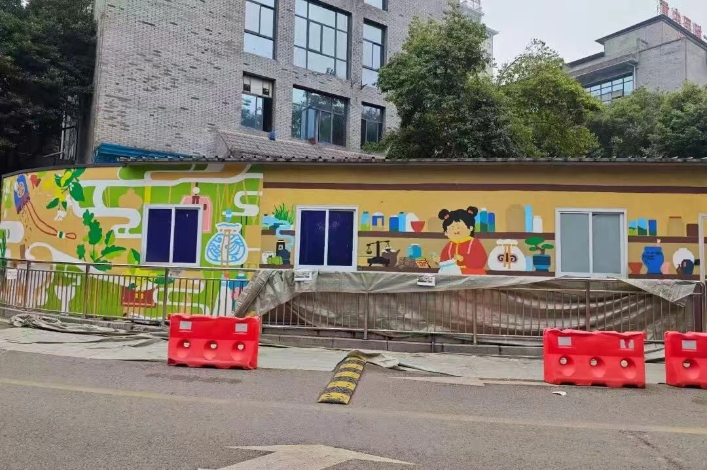
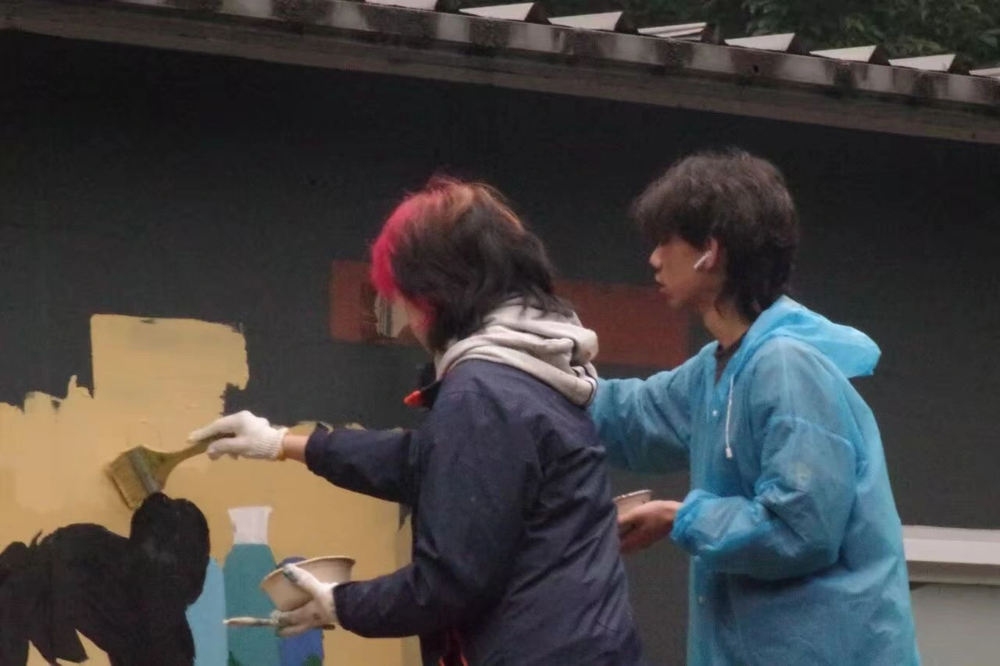
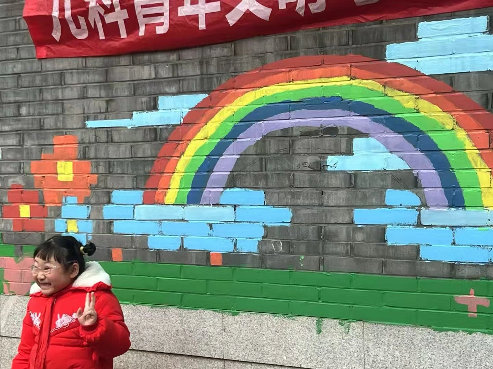
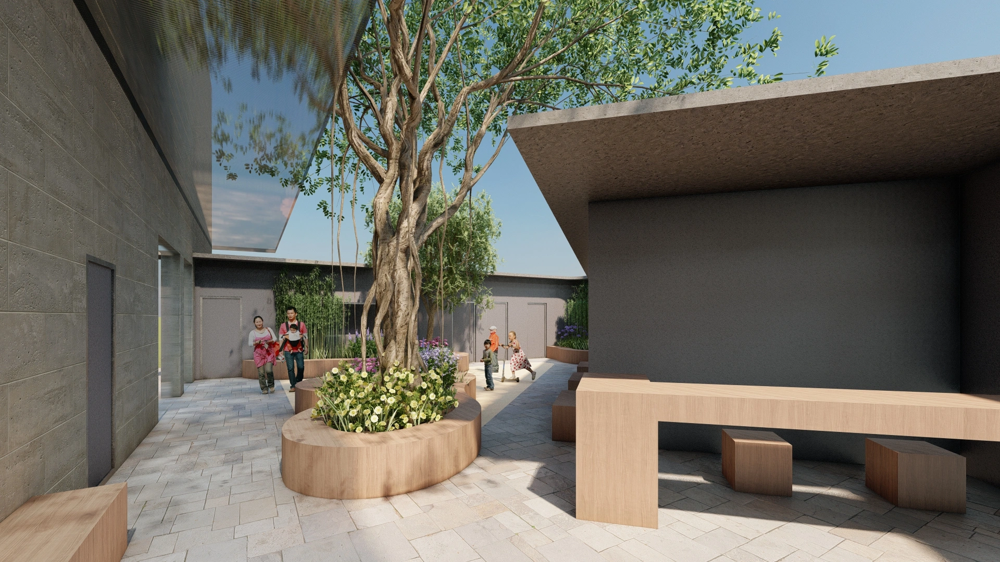
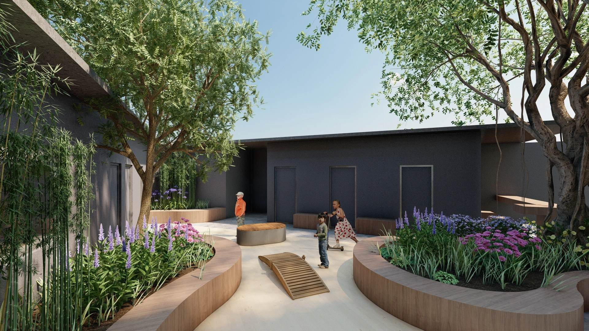
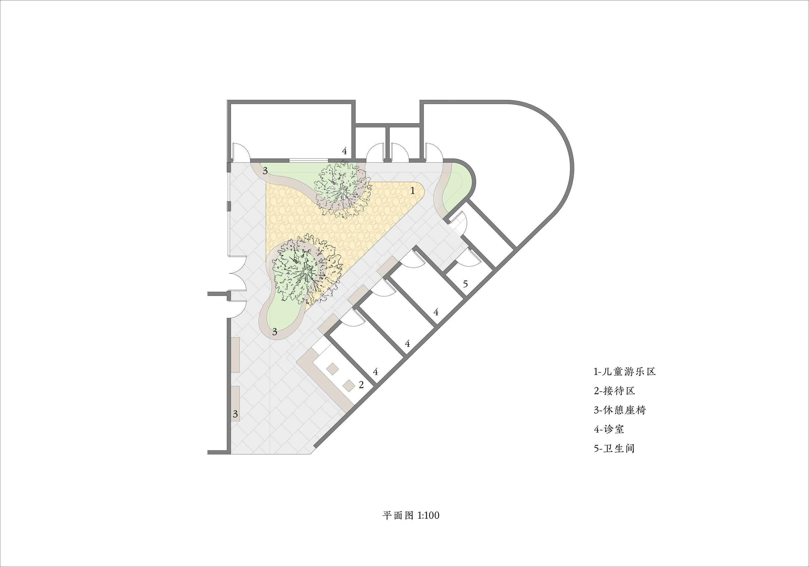
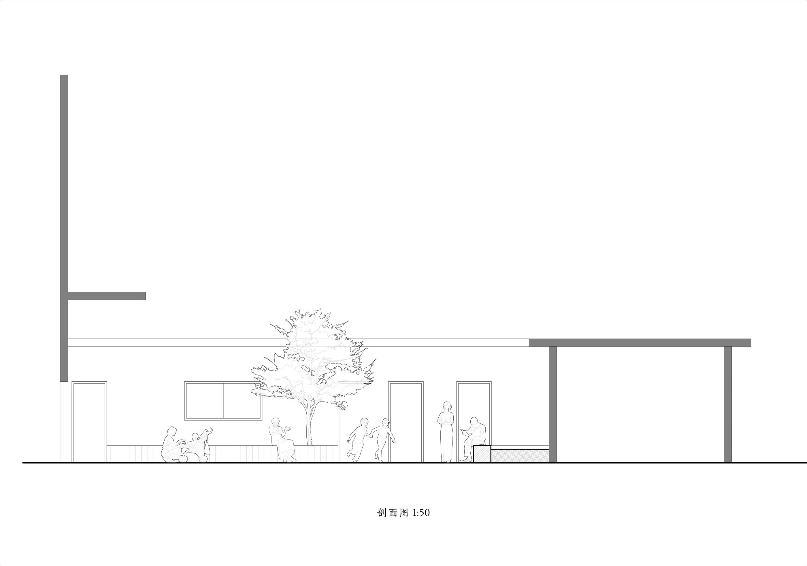

Chongqing Children's Hospital
Community Outdoor Space + Mural Design
A volunteering and design project to help reimagine a temporary hospital addition as a welcoming outdoor space for children.
Volunteering: Painting the Walls
We designed and painted the exterior walls of a children’s hospital. Originally built as an emergency addition following COVID-19, the space was being considered by the hospital for permanent use as an outdoor area for children.



Designing the Outdoor Space
Building on the volunteering work, we developed an outdoor-space proposal and produced plans, a section, and visualizations. We submitted the design to the hospital to support its plans for a permanent outdoor space for children.



